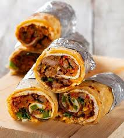
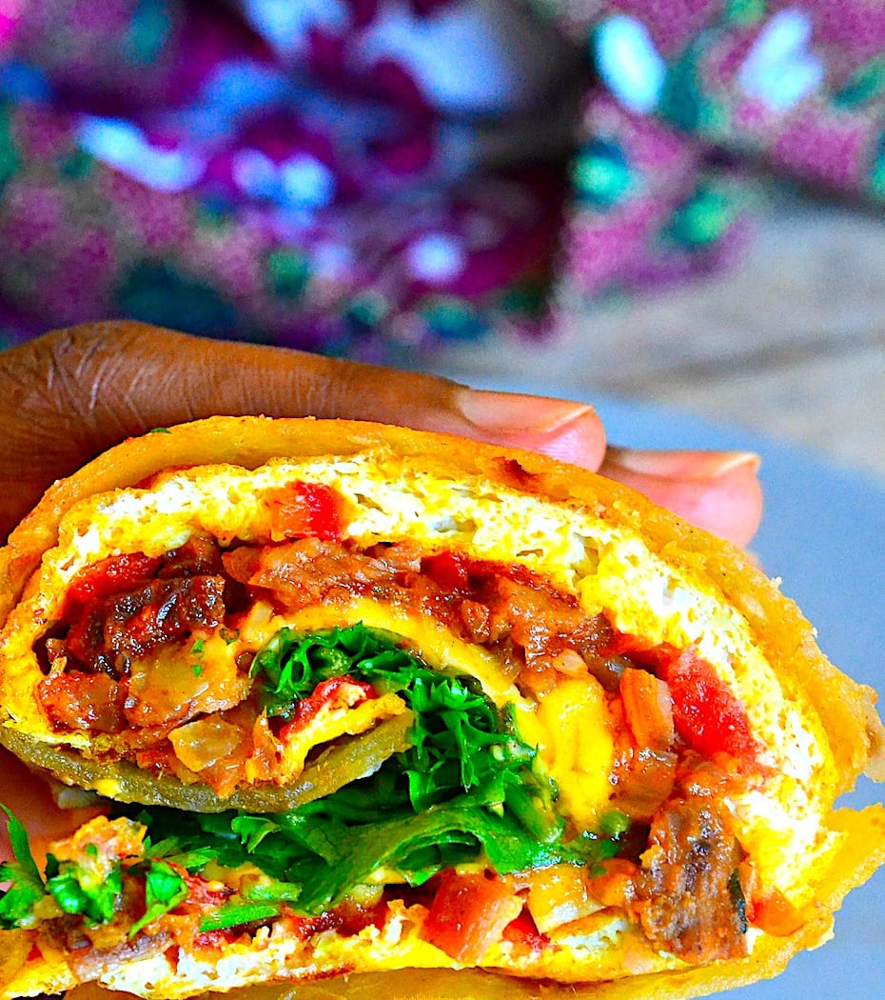
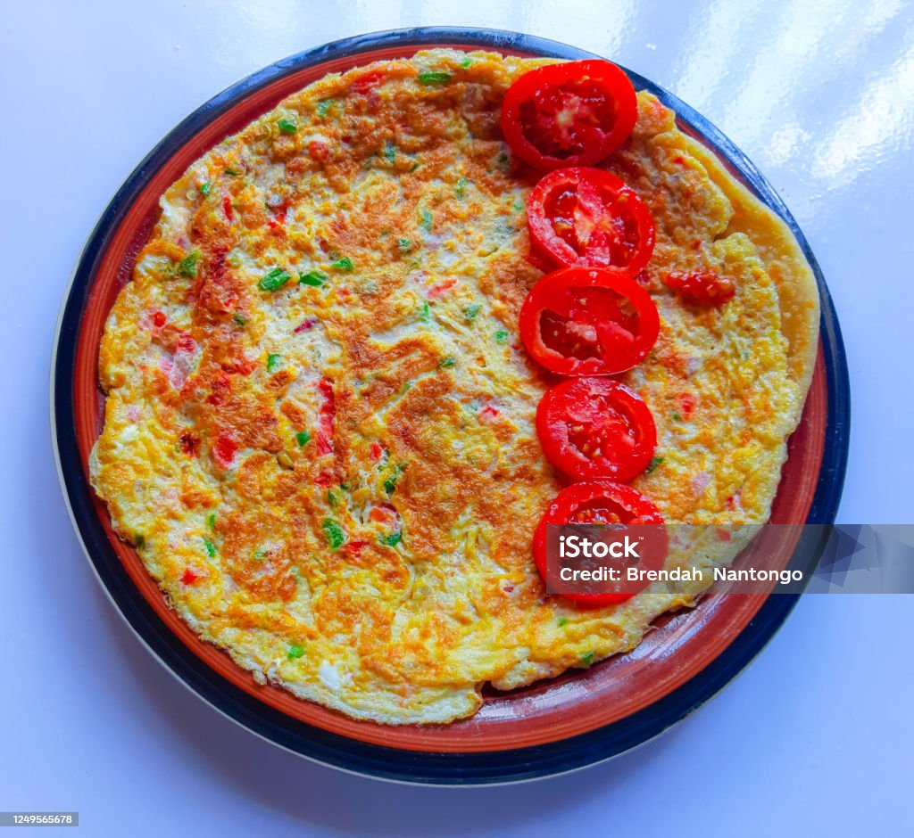

Welcome to Rolex Hub
A Rolex is a famous Ugandan street-food wrap made with chapati, eggs, and fresh vegetables. The name comes from the phrase “rolled eggs.” It is affordable, delicious, and enjoyed across Uganda.
What is a Rolex?
The Ugandan Rolex is one of the country’s most popular street foods. It combines chapati, eggs, onions, tomatoes, and vegetables into a tasty wrap. Many people also create fusion versions by adding cheese, meat, or potatoes.
Recipe Ingredients
Main Ingredients
- Chapati
- Eggs
- Tomatoes
- Onions
- Cabbage
- Spinach
Fusion Ingredients
- Broccoli
- Irish Potatoes
- Cheese
- Minced Meat
- Curry Powder
- Pepper
Chapati Mixture
- Flour
- Water
- Salt
- Onions
- Baking Powder
- Cooking Oil
Cooking Steps
- Prepare the chapati dough using flour, water, salt, onions, curry, and baking powder.
- Chop and prepare all vegetables.
- Cook the minced meat and potatoes until ready.
- Beat the eggs and mix them with vegetables and spices.
- Fry the mixture until golden brown and slightly dry.
- Place the mixture onto the chapati.
- Add cheese and roll everything together.
- Serve hot and enjoy your fusion Rolex.
Gallery


